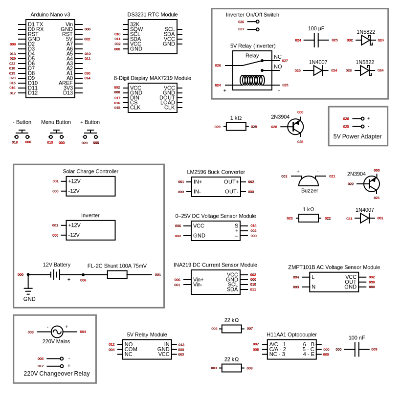
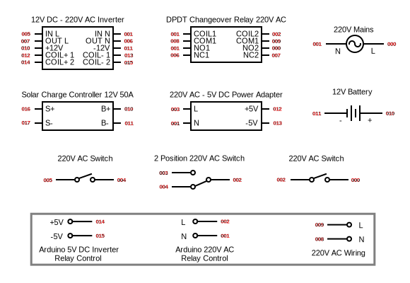
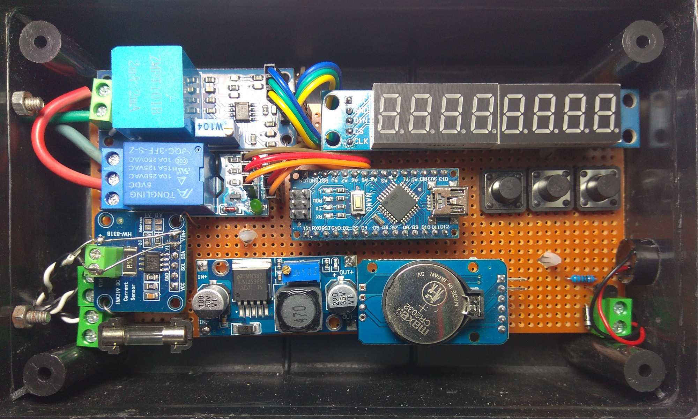

Solar and Battery Management System Using Arduino Nano
Project Objective
This project aims to develop a solar and battery power management system using an Arduino Nano. The system prioritizes solar energy during daytime (in SUB mode) to power an inverter and charge a battery, while intelligently switching to utility power (WAPDA) when necessary. The primary objective is to ensure continuous power availability while protecting the battery from overcharge (high charge quantity), over-feeding (high charging rate), over-discharge (high discharge quantity), and overload (high discharge rate) conditions.
System Overview
- Primary Power Source: 4 x 300W (Voc = 24V, Isc = 15A) PV solar array via a PWM charge controller.
- Backup Power Source: 220V 50Hz Utility grid (WAPDA).
- Storage: 12V 200Ah lead-acid tubular battery, which stays at ≈12.9V when fully charged, with no load and no charging.
- Load: 600W inverter powering AC appliances.
Operational Logic
- During daytime, power is drawn from solar to run the inverter (if sunlight is sufficient and/or according to solar on/off time settings) and charge the battery.
- If the AC load exceeds solar supply and the battery begins to discharge, switch to grid even during daytime.
- At night or on cloudy days:
- If grid is available, use it instead of draining the battery.
- If grid is unavailable, use the battery to run the inverter as long as the battery state remains within safe operating limits.
- If USB mode is selected (instead of SUB), grid is always given priority. This can be useful in winters when not much power is needed during daytime. So inverter runs only during power outages.
Battery Protection Rules
-
Over-discharge protection
Inverter is turned off if battery voltage drops below
BVlow, even if there is no grid. A 2 minutes window is given if voltages remain above
BVcrit.
Discharging current is also limited to
BIhigh. A 10 seconds window is given if discharge rate is below
BIcrit (e.g. for torque load, or to allow PWM controller to draw more power from PV array).
-
Overcharge protection
Start beeping if battery is overcharged i.e. charged above
BVfull or at a rate higher than
BIhigh. We cannot control the PWM controller with Arduino. But we can cry.
Alarms
Raise alarm (start beeping) if any of the following is true:
- Battery is above
BVfull
- Battery is below
BVlow
- Battery is being charged at a rate higher than
BIhigh
- Battery is being discharged at a rate higher than
BIhigh
- During daytime:
- Battery is being discharged (at any rate; we should be using solar)
- Inverter turned off (and switched to grid; we should be using solar)
- Light sensor can be used to sense clouds, to avoid false warnings.
- Exact reason of turning off the inverter is shown on screen. See warnings below.
Before raising alarms, give a 5-30 seconds window for temporary spikes / dips in battery voltage / current.
On-Screen Warnings
Inverter turned off (and switched to grid) due to:
- E 1: Battery low – voltage below
BVlow
- E 2: Battery overloaded – high current (>
BIhigh) drained
- E 3: Load higher than the solar power (during daytime) – due to morning / evening, clouds etc.
Display + Settings
- Use push buttons to jump to the next screen (center) and to change the configurable values (left and right).
- First 3 screens are informatory. On these screens, setting buttons turn off the display. Display also turns off if no activity is detected for 5 minutes. Press any button or wave hand (to trigger infrared obstacle detector) to turn the display back on.
- On SAVE screen (last), setting buttons save the changed settings, if any. Then it jumps to the first screen. If it doesn't, there is a problem with the set values such as:
- Display jumps back to the first screen after 30 seconds of inactivity on settings screens.
Screens:
- Battery voltage (left, Volts) and current (right, Ampere)
- Battery voltage (left, Volts) and power being drawn from or fed to the battery (product of voltage and current) (right, Watt)
- Battery voltage (left, Volts) and temperature (right, °C)
- Battery full charge voltage
BVfull (Volts, range: 12.0-16.0, default: 14.4)
- Battery discharged voltage low threshold
BVlow (Volts, range: 10.0-13.0, default: 12.0 (≈ 50% DoD))
- Battery discharged voltage critical threshold
BVcrit (Volts, range: 9.0-12.0, default: 11.0)
- Battery discharge current critical threshold
BIcrit (Ampere, range: 20-60, default: 50)
- Battery discharge current high threshold
BIhigh (Ampere, range: 10-30, default: 20 (@ C10))
- Battery discharge current low threshold
BIlow (Ampere, range: 1-15, default: 5)
- Prioritize solar or grid (Selection, options: SUB / USB, default: SUB)
- Delay before switching AC load back to inverter after inverter turned off due to battery overloaded (high current drained) or voltage dropped, now no grid and battery is above
BVlow (Minutes, range: 1-10, default: 5)
- Delay before switching AC load back to inverter (daytime) after inverter was turned off for any reason (e.g. due to clouds, or battery overload or low voltage condition), now solar is available (Minutes, range: 1-10, default: 5)
- Window before switching AC load to grid if battery voltages are between
BVlow and BVcrit (Minutes, range: 1-10, default: 2)
- Window before switching AC load to grid if battery discharge current is between
BIcrit and BIhigh (Seconds, range: 5-60, default: 10)
- Window before switching AC load to grid (daytime) if battery discharge current is between
BIhigh and BIlow (Minutes, range: 1-10, default: 2)
- Window before switching AC load to grid (daytime) if battery discharge current is below
BIlow (Minutes, range: 1-15, default: 5)
- Clock time (24h format)
- Solar on time (24h format, range: 05:00-10:00, default: 07:00)
- Solar off time (24h format, range: 14:00-19:00, default: 17:00)
- Display brightness (Level, range: 1-10, default: 1)
- Buzzer intensity (Level, range: 1-10, default: 1)
- Save
Hardware Components
- Arduino Nano [1] – main controller for sensor reading and decision-making.
- INA219 Bi-Direction DC Current Sensor Module [2] [3] + FL-2C Shunt Resistor 100A 75mV [4] – used to measure battery current (charging and discharging).
- Default I2C Address: 0x40
- Recommended configuration is to sense high-side current i.e. shunt is connected to the positive terminal of battery, and negative terminal is shared with circuit GND.
- Max bus voltage (across Vin- and GND): 0V – 26V (makes sense only in case of high-side sensing)
- Max measurable current:
- With on-board R100 (0.1 Ω) SMD shunt: 3.2 A
- With 100A 75mV (= 0.00075 Ω) shunt: 436A (= 0.32767V / 0.00075Ω, theoretically)
- 0–25V DC Voltage Sensor Module [5] – monitors battery voltage level.
- Alternatively use bus voltage from INA219 sensor if sensing high-side. Bus voltage + shunt voltage gives the battery voltage.
- ZMPT101B AC Single Phase Voltage Sensor Module [6] – measures grid voltage. Alternatively, simply detect the presence of AC power using:
- 220V AC to 5V DC Converter
- AC 220V Optocoupler Isolation Module
- H11AA1 Optocoupler [15]
- Input LEDs forward voltage drop: 1.2-1.5V, forward current: 10mA (max 60mA).
- DS3231 Precision RTC Module [7] – remembers time so that to schedule solar on / off time in the morning and evening respectively.
- BH1750 Light Sensor Module (optional) [8] – measures solar irradiance to determine if sunlight is sufficient for AC load.
- Relay Module [9] (in NO mode) – used to switch AC load between grid and inverter output.
- 5V Relay [10] (in NC mode) – used to turn off inverter when not needed (to save battery) or during battery protection events. This relay is installed inside the inverter in series with the main power button.
- 8-Digit Display MAX7219 Module [11] – show battery (dis)charge current / voltage / power, and configurable values.
- 5-12V Active Buzzer [12] – for alarms.
- Max current: 40mA (at 12V)
- 3 x Push Buttons (momentary) [13]:
- Left: Decrease a configurable value (setting).
- Center: Switch between screens and turn off the display.
- Right: Increase a configurable value (setting).
- LM2596 Buck Converter [14] – converts 12V to 5V for Arduino circuit.
Minor Parts
For H11AA1 Optocoupler:
- 2 x 22 kΩ 2W resistor (with live and neutral) – 220V (RMS, 311V peak) AC input current limiting.
- Forward current: ~7mA ((311V - 1.2V) / 44kΩ)
- Power rating: ~1W (7mA x 7mA x 22kΩ / 1000)
- 100 nF ceramic capacitor – stabilizes H11AA1 Optocoupler output (due to zero-crossing). Or use software debouncing logic.
For Buzzer:
- 2N3904 transistor – controls voltage supply (5-12V) to the buzzer to adjust the intensity.
- Collector-emitter voltage: 40V
- Max collector current: 200mA
- Max base current: 20mA (200mA / 10)
- Max base-emitter voltage drop: 0.95V (fully saturated)
- Transition frequency: 300MHz | Rise/fall time: 35ns (switching speed matters for PWM)
- 470 Ω resistor – between the transistor (2N3904) base and Arduino pin to protect high current draw.
- For 100mA current draw from the transistor (5V - 0.7V / 10mA)
- 1N4007 diode – for flyback protection with the buzzer.
For Relay (inverter)
- 2N3904 transistor – drives the relay.
- 470 Ω resistor – between the transistor (2N3904) base and Arduino pin to protect high current draw.
- For 100mA current draw from the transistor (5V - 0.7V / 10mA)
- 1N4007 diode – for flyback protection at the relay coil.
- 100µF 16V capacitor – for stabilizing voltage at the relay coil.
- 2 x 1N5822 Schottky diode – for diode ORing. Power sources isolation is required because inverter relay is triggered from 2 sources in parallel: Arduino and a power adapter. Latter is used to bypass the protection system.
Others:
- 3 Pin T-Block Connector – AC mains connections:
- 220V live
- 220V neutral
- Output of Relay Module to switch AC load between grid and inverter output. It controls a high-power 220V-driven changeover relay. Latter can also be triggered from AC mains to bypass the protection system.
- 4 x 2 Pin T-Block Connector for:
- 12V supply (battery)
- Relay (inverter)
- FL-2C Shunt Resistor
- BH1750 Light Sensor
- 1A Fuse + Fuse Holder – for whole circuit's protection.
- DC Power Jack (male + female) – to make a detachable connection to Relay (inverter).
- Veroboard Dotted (145mm x 65mm) – circuit designing.
- 2.54mm Pitch Female Header – soldered with the veroboard to connect the sensor modules.
- Plastic Enclosure Box (160mm x 96mm x 50mm) – enclose the circuit.
- 4 x Plastic PCB Circuit Board Spacer – between veroboard and the box bottom.
- 2-Core Cable – for 12V power supply, Relay (inverter) and FL-2C Shunt Resistor connections.
- 3-Core Cable – for AC connections.
- 4-Core Shielded Cable (for voice data) – for BH1750 Light Sensor connections.
Connections
1. INA219 Current Sensor & FL-2C Shunt
- Shunt Resistor: Place between the battery positive terminal and the load.
- INA219 Connections:
Vin+ → Shunt's battery-side terminal (charging would give negative current value)Vin– → Shunt's load-side terminal (also connected to +ve terminals of inverter and solar charge controller)GND → Arduino Nano GNDVCC → Arduino Nano 5VSDA → Arduino Nano A4 (SDA)SCL → Arduino Nano A5 (SCL)
- Should remove the on-board SMD shunt? If 0.00075 Ω shunt is placed in parallel with the onboard 0.1 Ω SMD resistor, it becomes 0.0007444 Ω. At 50A:
- Voltage drop: 37.2 mV
- Current and power dissipation are within limits (so no need to remove the on-board SMD shunt):
- External shunt: 49.6 A (1.85 W dissipation)
- Internal shunt: 372 mA (13.8 mW dissipation)
2. 0–25V DC Voltage Sensor
- Input:
VCC → Battery 12V+GND → Battery 12V-
- Output:
S (Signal) → Arduino Nano A0 (analog input)+ → Arduino Nano 5V– → Arduino Nano GND
3. AC Detection
Use any of the both methods.
3 (a). ZMPT101B AC Voltage Sensor
VCC → Arduino Nano 5VOUT → Arduino Nano A1GND → Arduino Nano GND- AC Side:
L → Live (220V)N → Neutral (220V)
3 (b). H11AA1 Optocoupler
- AC Side:
- Live (220V) → 22 kΩ resistor → H11AA1 Pin 1
- Neutral (220V) → 22 kΩ resistor → H11AA1 Pin 2
- DC Side:
- H11AA1 Pin 4 (collector) → Arduino Nano D2 (digital input with internal pull-up)
- H11AA1 Pin 5 (emitter) → Arduino Nano GND
- Leave the H11AA1 Pin 6 (base) unused since the internal NPN transistor is driven by the internal LEDs.
- Add 100 nF capacitor between D2 and GND.
4. DS3231 RTC Module
VCC → Arduino Nano 5VGND → Arduino Nano GNDSDA → Arduino Nano A4 (shared with INA219)SCL → Arduino Nano A5 (shared with INA219)
5. 5V Relay Module (AC Changeover)
VCC → Arduino Nano 5VGND → Arduino Nano GNDIN → Arduino Nano D4 (control signal)- AC Load:
- Relay
COM → 220V Live
- Relay
NO → Changeover coil (Live side)
- Changeover coil Neutral → 220V Neutral
6. 5V Relay (Inverter)
- Power ORing:
- Diode 1: Arduino 5V → Anode of 1N5822 → Cathode to relay coil+
- Diode 2: External 5V+ adapter → Anode of 1N5822 → Cathode to relay coil+
- Transistor Driver:
- Arduino D5 → 1 kΩ resistor → 2N3904 Base
- 2N3904 Emitter → GND
- 2N3904 Collector → Relay coil-
- Protection:
- 1N4007 flyback diode across relay coil (reverse polarity: cathode to 5V, anode to GND terminal).
- 100 µF capacitor across relay coil+ and coil-.
- Relay
COM and NC → Inverter on/off switch
- External 5V- adapter → Relay coil-
7. MAX7219 8-Digit Display
VCC → Arduino Nano 5VGND → Arduino Nano GNDDIN → Arduino Nano D12 (MISO)CS → Arduino Nano D11 (MOSI)CLK → Arduino Nano D10 (SS)
8. 5–12V Active Buzzer
- Driver Circuit:
- Arduino Nano D6 (PWM frequency: ~976 Hz) → 1 kΩ resistor → 2N3904 Base
- 2N3904 Emitter → GND
- 2N3904 Collector → Buzzer negative terminal
- Buzzer positive terminal → 12V+ battery
- Protection:
- 1N4007 diode across buzzer (reverse polarity: cathode to 12V+, anode to GND terminal).
9. Push Buttons (x3)
- Each Button:
- One terminal → GND
- Other terminal → Arduino Nano D7, D8, D9 (digital inputs with internal pull-up enabled).
10. LM2596 Buck Converter
- Input:
IN+ → Shunt's load-side terminal (other side is connected to battery 12V+)IN- → Battery 12V-
- Output:
OUT+ → Arduino Nano 5V pin (and all 5V modules)OUT- → Arduino Nano GND (common ground).
11. Power Supply Summary
- 12V Battery:
- Powers LM2596 (converted to 5V for Arduino/modules).
- Directly feeds voltage sensor and buzzer (12V).
- Also connected to inverter and solar charge controller (+ve side through shunt resistor).
- 220V AC:
- Feeds ZMPT101B AC voltage sensor (or H11AA1 optocoupler) and relay module (for changeover coil).
Schematics
Arduino Circuit:

Solar and AC (Grid + Inverter) Circuit:

Flowchart:

Code:
https://github.com/mirfatif/SolarBMS/SolarBMS.ino
Libraries:
Finally:

Links
- https://digilog.pk/products/arduino-nano-v3-with-usb-cable-in-pakistan
- https://digilog.pk/products/ina219-bi-direction-dc-current-power-supply-sensor-module-gy-219-module-in-pakistan
- https://wolles-elektronikkiste.de/en/ina219-current-and-power-sensor
- https://www.aliexpress.com/item/1005007796473791.html
- https://digilog.pk/products/dc-0-to-25v-voltage-sensor-module-for-arduino-in-pakistan
- https://digilog.pk/products/zmpt-single-phase-ac-voltage-sensor-module-in-pakistan
- https://digilog.pk/products/ds3231-rtc-module
- https://instock.pk/ambient-light-intensity-lux-sensor-bh-1750.html
- https://digilog.pk/products/1-channel-5v-arduino-relay-module-in-pakistan
- https://digilog.pk/products/spdt-6v-or-5v-relay
- https://digilog.pk/products/max7219-8-digit-7-segment-module-assembled-in-pakistan
- https://digilog.pk/products/buzzer-alarm-active-piezo-electronic-wires-dc-3-12v
- https://digilog.pk/products/12x12x9mm-tactile-push-button-switch
- https://digilog.pk/products/411a-lm2596-buck-converter-step-down-module-power-supply
- https://digilog.pk/products/h11aa1-optocoupler-dip-6-pin-ic
- https://github.com/NorthernWidget/DS3231
- https://github.com/wollewald/INA219_WE
- https://github.com/JemRF/max7219
- https://github.com/Abdurraziq/ZMPT101B-arduino